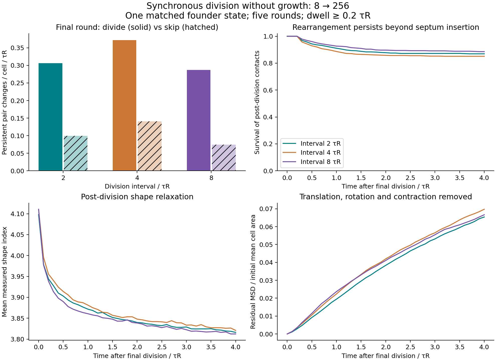
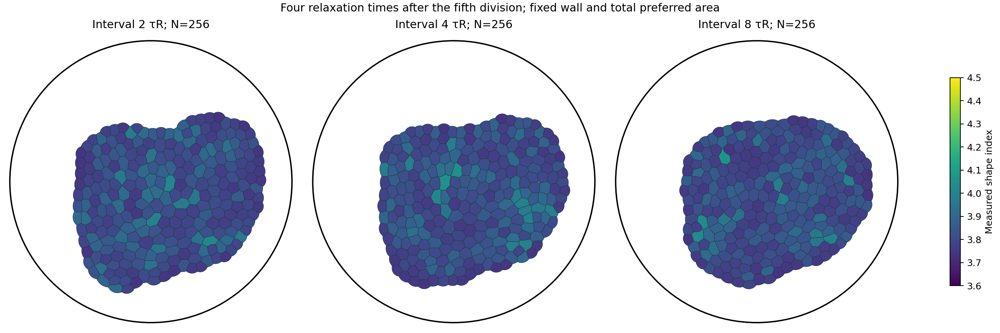
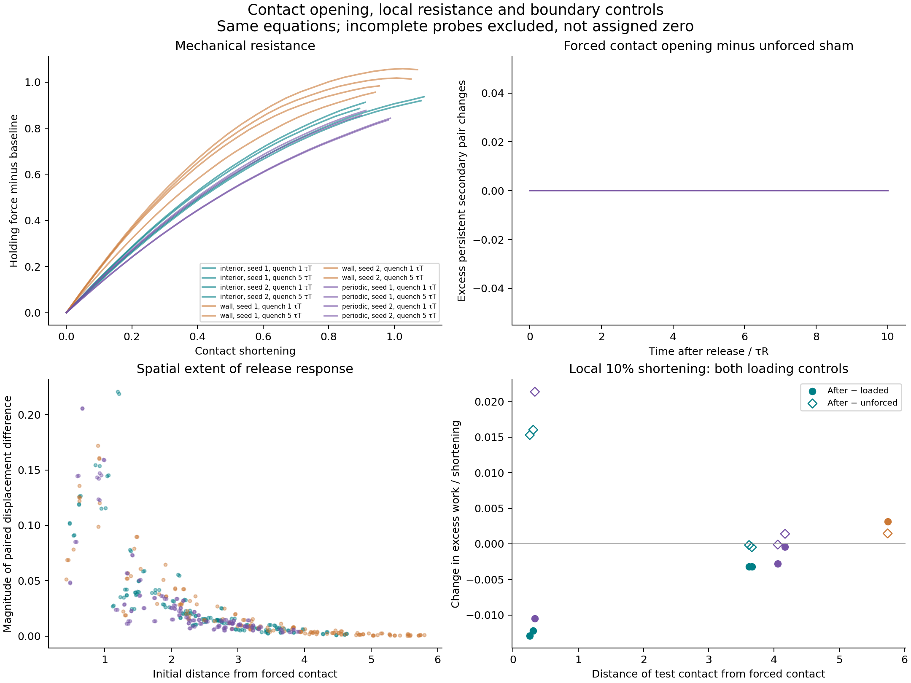
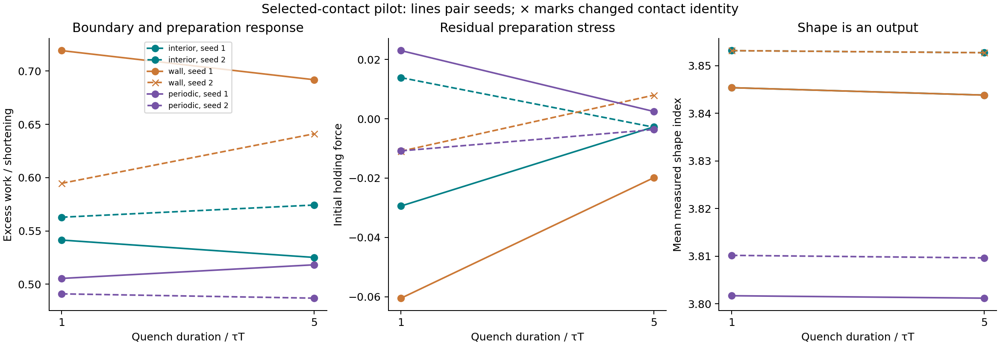
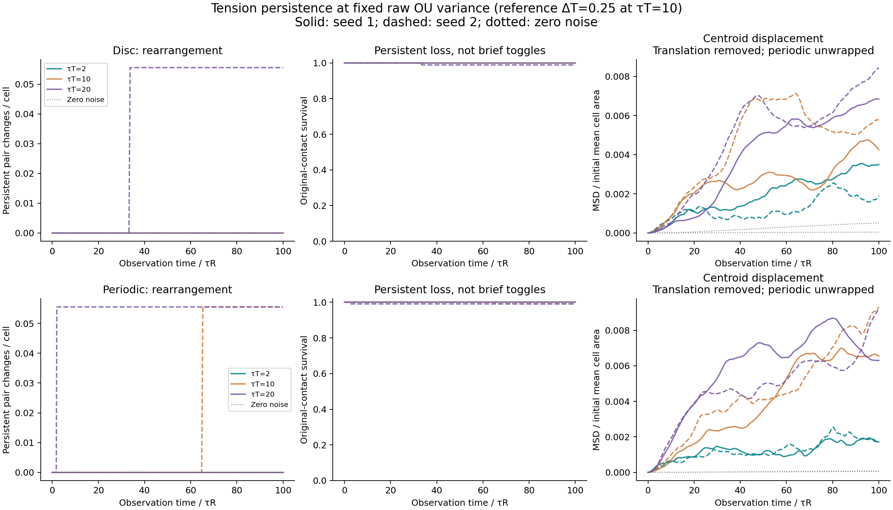

Collective dynamics experiments
Same foam equations; fixed circular wall. Controlled pilots, not a phase diagram.
Findings and limitations · Numerical summary and failures
Synchronous division timing
PNG · PDF

256-cell snapshots
PNG · PDF

Local exchange and facilitation
PNG · PDF

Boundary and preparation
PNG · PDF

Tension persistence at fixed variance
PNG · PDF
